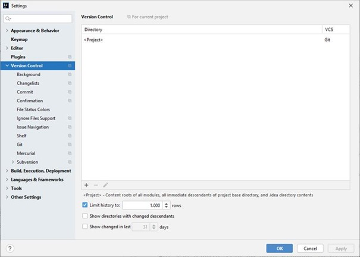
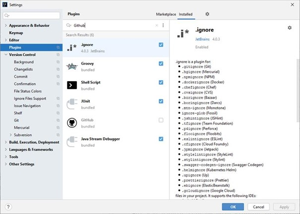
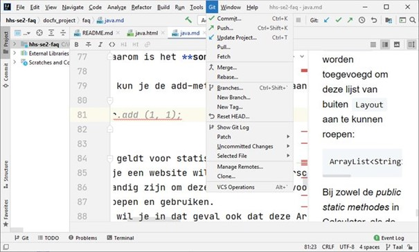
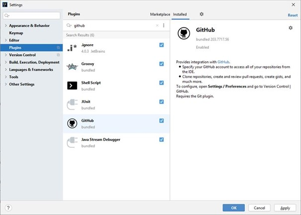
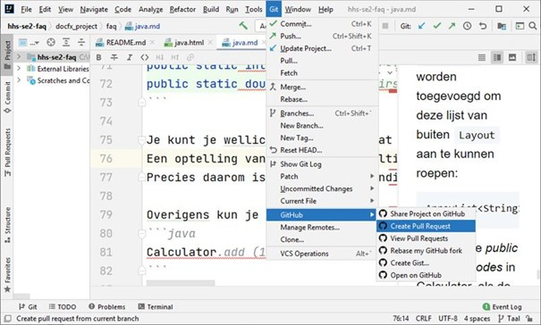

IntelliJ
"Ik heb problemen met mijn Github-plugin / kan geen GitHub-account toe voegen"

controlleer of de plugin geinstalleerd en actief is:

Deze plugin wordt standaard geïnstalleerd als je de Community Edition hebt geïnstalleerd. Zoek in de plugins naar Github en controlleer of er een vinkje staat bij de plugin. Indien dat niet het geval is, is consequentie hiervan o.a. dat je geen Pull Request kunt aanvragen via IntelliJ, want het menukeuze voor github ontbreekt.

Als je het vinkje aanzet en op Apply klikt, kun je accounts voor Github toevoegen en kun je ook vanaf dat moment Pull Requests aanvragen:
 